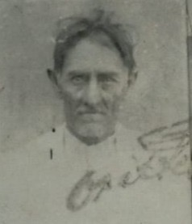

← Voltar aos Encontros


Memórias da Família
Fotografias históricas preservando a memória dos nossos antepassados
Sobre esta Coleção
Esta galeria reúne fotografias históricas da família Faria, preservando a memória visual dos filhos de Custódio Luiz de Faria e suas famílias. Cada imagem conta uma história e representa um pedaço importante do nosso legado familiar.
Essas fotografias, algumas das poucas que resistiram ao tempo, são tesouros que nos conectam com nossas raízes e nos permitem conhecer os rostos daqueles que vieram antes de nós.
Custódio Luiz de Faria
Patriarca da Família
Patriarca da Família
Maria Madalena de Faria
Conhecida como Maricota
Conhecida como Maricota
Custódio Faria Filho
Filho de Custódio Luiz de Faria
Filho de Custódio Luiz de Faria
Agenor Faria e filho Ari Faria
Duas gerações da família
Duas gerações da família
Osório Faria e Estela
Casal da família Faria
Casal da família Faria
Dolor de Faria e família
Retrato familiar histórico
Retrato familiar histórico

Cassemiro
Membro da família Faria
Membro da família Faria
Albino Fernandes de Araújo
Esposo de Maria Madalena
Esposo de Maria Madalena